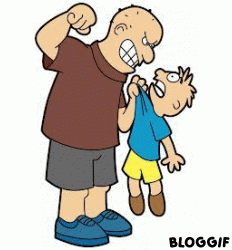
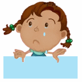

¿Qué es la violencia infantil?
El maltrato infantil se define como los abusos y la desatención de que son objeto los menores de 18 años, e incluye todos los tipos de maltrato físico o psicológico, abuso sexual, desatención, negligencia y explotación comercial o de otro tipo que causen o puedan causar un daño a la salud, desarrollo o dignidad del niño, o poner en peligro su supervivencia, en el contexto de una relación de responsabilidad, confianza o poder. La exposición a la violencia de pareja también se incluye a veces entre las formas de maltrato infantil.
El maltrato infantil es una causa de sufrimiento para los niños y las familias, y puede tener consecuencias a largo plazo. El maltrato causa estrés y se asocia a trastornos del desarrollo cerebral temprano. Los casos extremos de estrés pueden alterar el desarrollo de los sistemas nervioso e inmunitario. En consecuencia, los adultos que han sufrido maltrato en la infancia corren mayor riesgo de sufrir problemas conductuales, físicos y mentales

UNICEF presenta nueva campaña contra el maltrato infantil
El maltrato infantil es una de las principales preocupaciones de UNICEF en Latinoamérica. Sólo una pequeña parte de estas vulneraciones son denunciadas a la justicia, investigadas por los organismos competentes y pocos agresores son procesados
Las Oficinas de UNICEF de Argentina, Chile, Paraguay y Uruguay iniciaron la campaña digital #FinAlMaltrato: Detengamos el maltrato infantil, la cual pretende generar conciencia en la población con el fin de erradicar la violencia contra los niños, niñas y adolescentes y provocar un cambio cultural en los adultos.
La campaña consiste en cuatro videos filmados en lugares públicos emblemáticos de Buenos Aires, Santiago, Asunción y Montevideo, donde estatuas humanas simulan situaciones de maltrato infantil perpetradas por adultos. La plataforma de esta iniciativa es un sitio web interactivo www.hazquesedetenga.com, cuyos contenidos serán difundidos a través de redes sociales (Facebook, Twitter, Youtube e Instagram) y mediante folletos informativos.
Tipos de maltrato infantil
El maltrato físico
El maltrato físico ha sido definido por Arruabarrena y De Paúl como un tipo de comportamiento de carácter voluntario que provoca bien un daño físico en el niño o bien el desarrollo de una enfermedad física (o riesgo de padecerla). Tiene, por tanto, un componente de intencionalidad respecto a infringir un perjuicio al menor de forma activa.
Pueden distinguirse diversas tipologías de maltrato físico en función del fin que los progenitores deseen alcanzar: como forma de impartir disciplina, como expresión de rechazo al pequeño, como expresión de características sádicas por parte del agresor o como consecuencia del descontrol ante una situación familiar conflictiva determinada.

El maltrato emocional
En cambio, el maltrato emocional no presenta la misma objetividad y claridad en cuanto a la posibilidad de delimitarlo. Los mismos autores lo conceptualizan como el conjunto de conductas relativas a una interacción más o menos mantenida en el tiempo y que se basa en una actitud de hostilidad verbal (insultos, desprecios, amenazas) así como en el bloqueo ante cualquier iniciativa de interacción por parte del niño hacia sus progenitores o cuidadores. Poderlo acotar como forma de maltrato infantil es complicado.
Por otro lado, el abandono emocional se entiende como la ausencia de respuestas por parte de los padres que, de forma permanente, se muestran pasivos ante las demandas o señales que emite el menor sobre sus necesidades de interacción y conductas de afecto respecto de dichas figuras parentales.
La diferencia principal entre ambos fenómenos alude, una vez más, a la intencionalidad de la acción; en el primer caso la acción es cometida y en el segundo, omitida.

La negligencia infantil
El abandono físico o negligencia infantil consiste en la acción de dejar de atender al menor al cual se tiene la obligación de cuidar, ya sea poniendo una distancia física objetivamente observable o no. Por lo tanto, esta práctica se entiende como una actitud de omisión, aunque determinados autores como Polansky consideran que este acto se efectúa voluntariamente por parte de los progenitores. Las consecuencias derivadas de la negligencia pueden ser tanto físicas, como cognitivas, emocionales o sociales, según Cantón y Cortés.
Además, Martínez y De Paúl han diferenciado entre los conceptos de negligencia y abandono físico. El primer fenómeno puede ser tanto consciente como inconsciente y puede ser debido a aspectos como la ignorancia e incultura de los progenitores al no considerar estos actos como posibles causantes de daño psicológico al menor. Por contra, el abandono físico se orienta más a consecuencias de daño hacia el organismo (daño corporal) y se entiende como un caso de negligencia extrema.